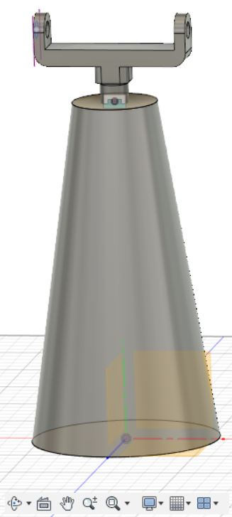
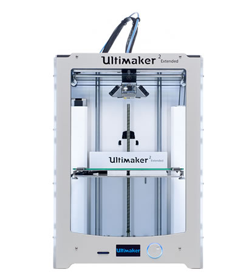

To start with, we design the myoelectric hand we wanted to develop. For doing this, it is remarkable that we use some pieces from e-NABLE Phoenix Hand v2 by Jason Bryant (href = "https://www.thingiverse.com/thing:1453190?fbclid=IwAR3uYC4fmc6STT2i5pPD_y9sUMnILAIcmT5yRUYVP6cNqeOnmREuv3mS2tI" ), due to our design was not sophisticated enough to carry out the target function we wanted (it can be shown in the below pictures). Once again, we are very grateful to Lars since he was who provided us the source. Moreover, we used FUSION 360 to design the wrist and the forearm.
The hand we have designed:
Firstly we are going to show some images of our hand’s design: the palm, the three different phalanges (distal phalanx, medial phalanx, proximal phalanx), link shafts, the wrist and the final result after combining everything.
Palm Proximal phalanx
Medial phalanx Distal phalanx
All the axis links
FINAL RESULT
However, as it can be seen, this hand wasn’t able to grip things and the fishing wires, which are used to close and open the hand, weren’t possible to place properly as it is with the e-NABLE Phoenix Hand v2.
Now, we will show you some images of how the design of the forearm and the wrist was made.
Firstly, we draw two sketches, more specifically two circles, that joint using within “Create” the tool “JOIN”. The bottom circle has a radius of 55.00mm and the one in the top has a radius of 25.00mm, trying to simulate the measurements of a real arm.
-->
Then, we created a hole, with a radius of 7.50mm, were the wrist would be placed. Once this step was done, the wrist was inserted using the tool “Insert Derive” within “Insert”.

Later this wrist was modified, as it can be seen afterwards. It is noteworthy that the wrist is no because we just wanted to focus in the mobility of the hand to grip things.
The next step was to apply the tool “Chamfer” in the top of the arm, to make the design more stylish.
Subsequently, a hole was made in the bottom area (with a radius of 31.50mm), to open the forearm which is required to introduce the electronic devices.
Then, a sketch was drawn in the top of the forearm, to be able to make all the holes required.
After it, another sketch was drawn. This time, a rectangle 140mmx65.00mm, which was extruded to divided the forearm in two different parts.
For the next step, an offset plan was needed, to be able to draw a sketch of a semicircle which was extrude 5.00mm.
The following step was to delate one face to improve the design, so in the hollow of the top, the micro Arduino, the battery and the breadboard were thought to be located there.
Some other sketches were also drawn with the same target, to extrude them to design the inside of the arm, in this case to place the three servomotors.
We had to measure all these devices to design the interior. This is the main reason why we draw the 3 servos with its wheals. These wheals were thought to amplify the angle of the turn of the Servos, to be able to tense more the wires. (These wires are fishing wires. This was also an advice of Lars, who usually use those in his prosthesis).
After it, we printed all the pieces, our designs and the ones from e-NABLE Phoenix Hand v2 by Jason Bryant. For doing this we use the software CURA. This step was difficult, due to the pieces had a lot of small details. This is the reason why we had a lot of problems printing, and we needed to realize this lot of times.

It is noteworthy to say that we used PLA material in all our design. PLA is Polylactid acid, which is a bio plastic so it was the best option for developing our hand.
We also needed elastic bands, to make the fingers return to its original position, but we didn´t get them due to we couldn´t find properly ones in the FabLab and we couldn´t buy them as we did with the fishing wires.
Below, we can see all the materials we printed.